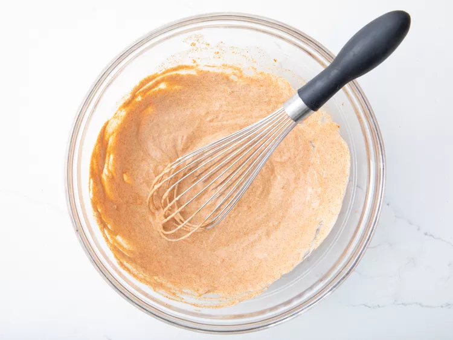
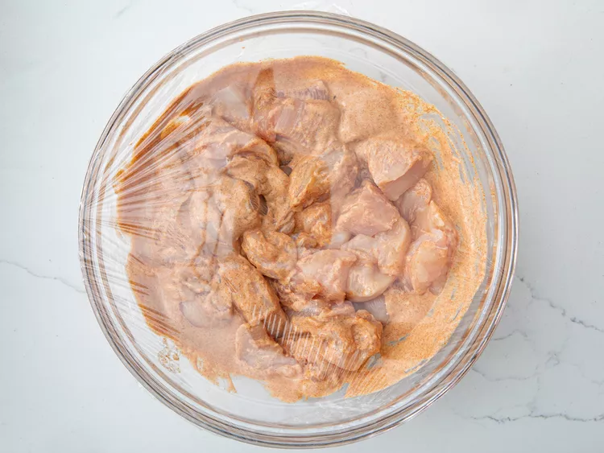
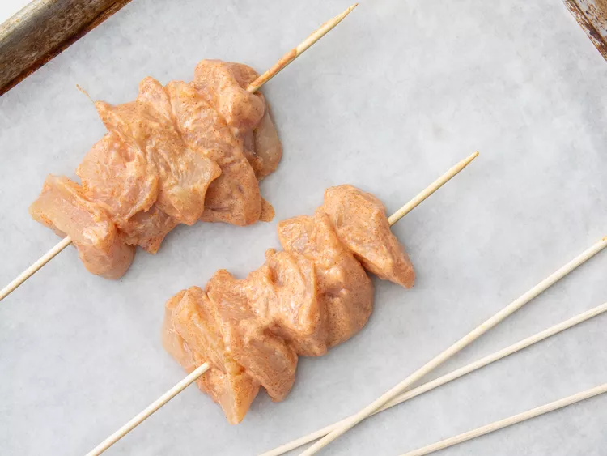
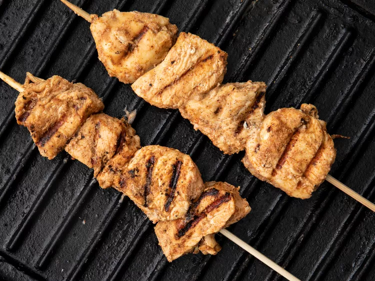
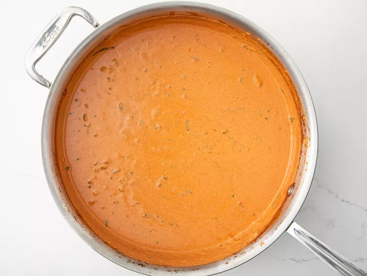
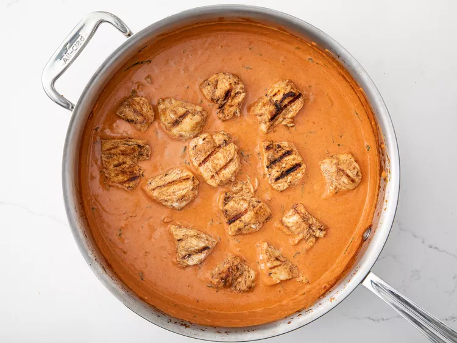

Hello Master Chef
Chicken Tikka Masala
Chicken tikka masala made easy with this great-tasting recipe — simply marinate chicken breast in yogurt and spices and then simmer in a tomato cream sauce. Serve with rice or warm pita bread.
| Prep Time: | Cook Time: | Total Time: |
|---|---|---|
| 30 mins | 50 mins | 1 hrs 20 mins |
Ingredients
- 1 cup yogurt
- 1 tablespoon lemon juice
- 4 teaspoons ground cumin, divided
- 1 teaspoon ground cinnamon
- 2 teaspoons cayenne pepper
- 2 teaspoons freshly ground black pepper
- 1 tablespoon minced fresh ginger
- 2 teaspoons salt, divided, or more to taste
- 3 boneless skinless chicken breasts, cut into bite-size pieces
- 4 long skewers
- 1 tablespoon butter
- 1 clove garlic, minced
- 1 jalapeno pepper, finely chopped
- 2 teaspoons paprika
- 1 (8 ounce) can tomato sauce
- 1 cup heavy cream
- ¼ cup chopped fresh cilantro
Directions
Step 1:-
Combine yogurt, lemon juice, 2 teaspoons cumin, cinnamon, cayenne, black pepper, ginger, and 1 teaspoon salt in a large bowl.
Step 2:-
Stir in chicken, cover, and refrigerate for 1 hour.
Step 3:-
Lightly oil the grill grate. Thread chicken onto skewers, and discard marinade. 
Step 4:-
Grill until juices run clear, about 5 minutes on each side. 
Step 5:-
Melt butter in a large heavy skillet over medium heat. Sauté garlic and jalapeño for 1 minute. Season with remaining 2 teaspoons cumin, paprika, and remaining 1 teaspoon salt. Stir in tomato sauce and cream. Simmer on low heat until sauce thickens, about 20 minutes.
Step 6:-
Add grilled chicken, and simmer for 10 minutes. Transfer to a serving platter, and garnish with fresh cilantro.
Step 7:-
Serve over rice.

Nutrition Facts (per serving)
| Nutrition | Value |
|---|---|
| Calories | 404 |
| FAT | 29g |
| Carbs | 13g |
| protein | 25g |